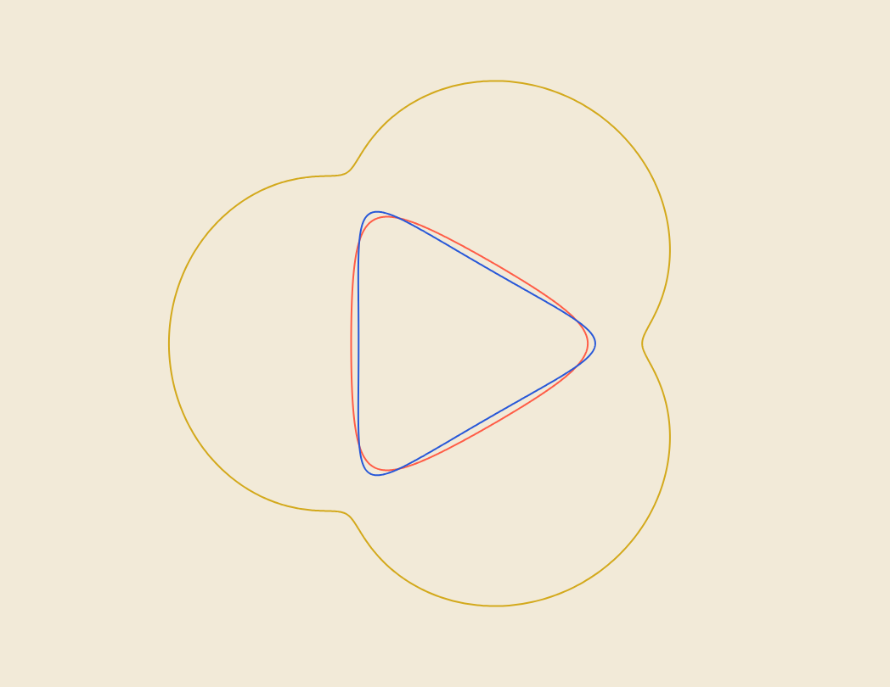

A machine by Travers MacMaster
SpiroFieldInteractive Digital Spirograph
SpiroField is an interactive digital spirograph for drawing layered hypotrochoid and epitrochoid curves with tactile ring, wheel and pen-hole controls.

What you can make
Interactive Digital Spirograph
Build crisp geometric rosettes, layered line drawings and mechanically imperfect spirograph studies that range from orderly curves to unstable ink-like paths.
How the process works
Choose a fixed ring, rolling wheel and numbered pen hole, then run the virtual mechanism inside or outside the ring. Lab controls introduce repeatable gear slip, backlash, wobble, pen flex and other physical irregularities.
Inputs and source material
Start with the built-in rings, wheels and pen holes, then choose line color, width, opacity, canvas and mechanical character.
Save and export
Save editable SpiroField projects and export finished artwork as high-resolution PNG or genuine vector SVG. Live drawing can also be recorded from the output canvas.
Getting started
How to use SpiroField
- 01Choose a ring, rolling wheel, pen hole and inside or outside drawing mode.
- 02Press Draw to watch the mechanism, or complete the curve instantly; layer additional patterns and use Lab controls for mechanical variation.
- 03Set the canvas and export size, then save the composition as PNG or vector SVG.
Output examples
{kind=link}

From the same studio